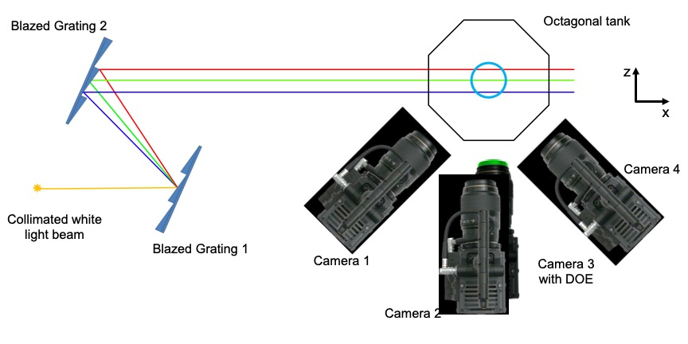

RainbowPIV with improved depth resolution –
design and comparative study with TomoPIV
Jinhui Xiong, Andres A. Aguirre-Pablo, Ramzi Idoughi,
Sigurdur T. Thoroddsen, Wolfgang Heidrich
Measurement Science and Technology, 2020

Schematic diagram for the experimental setup. Two blazed gratings are used to generate a size-controlled rainbow. Four cameras
are utilized for Tomo-PIV measurement, of which the third camera, with custom designed DOE (diffractive optical element) for all-in-focus
imaging, is also used for RainbowPIV.
Abstract
RainbowPIV is a recent imaging technology, proposed for time-resolved 3D-3C fluid velocity
measurement using a single RGB camera. It dramatically simplifies hardware setup and
calibration procedures as compared to alternative 3D-3C measurement approaches. RainbowPIV
combines optical design and tailored reconstruction algorithms, and earlier preliminary studies
have demonstrated its ability to extract physically constrained fluid vector fields. This article
addresses the issue of limited axial resolution, the major drawback of the original RainbowPIV
system. We validate the new system with a direct, quantitative comparison with four-camera
Tomo-PIV on experimental data. The reconstructed flow vectors of the two approaches exhibit a
high degree of consistency, with the RainbowPIV results explicitly guaranteeing physical
properties, such as divergence free velocity fields for incompressible fluid flows.
Paper
paper [Xiong2020SuperDepthRainbowPIV.pdf (2.3MB)]